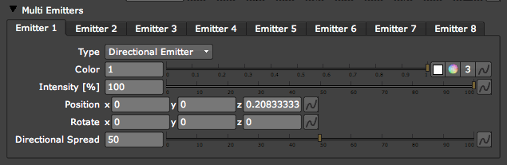
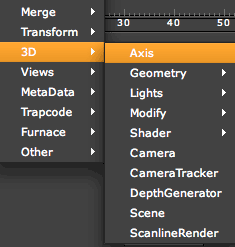
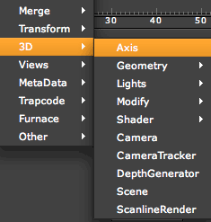
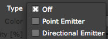
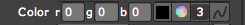

Emitter tab> Multi Emitter group
This set of groups lets you emit particles from multiple emitters within the same Particular node. There are eight Multi Emitter groups for this purpose. The Emitter Type> Multi Emitter(s) must be selected for them to be active.
The advantage of using Multi Emitters is the ability to control several Emitters with only a few properties, rather than setting up separate nodes for each Emitter. To get the most out of this group, we recommended that you link the emitters to Nuke's 3D lights. Read more in Using 3D Lights.
  

At left, Multi Emitters and its eight Emitters. At right, the 3D elements that Multi Emitters can pipe to via expressions.
Emitter 1, 2, 3... subgroups
Each Multi Emitter group is a unique opportunity to link Particular's 2D particles to Nuke's 3D elements. Rather than using XYZ of lights in Nuke to emit particles, each Multi Emitter acts the same way as the standard Point Emitter. There are eight Multi Emitters in all, numbered 1 to 8, and each Multi Emitter group has the same set of controls.
Type pop-up
Sets the kind of emission rate. By default, the Off option is chosen.

There are three Type options:
• Off: Does not change the emission rate based on any of the Multi Emitter's properties. Useful when Intensity is used for other things (such as actually lighting a scene).
• Point Emitter: Emits the particles in every direction. This is the default behavior of particles in Particular. The options in Emitter> Direction don't have much effect on these type of emitters, and when they do, you have no control over their direction.
* Directional Emitter: Emits particles in one direction, as if they were emitted from a real-life spotlight. It appears to push all of the particles with equal intensity. This emitter has a spread and a feather to the spread that is controlled with the Directional Spread parameter. You can point its direction with the Emitter> Direction pop-up. Set the Direction option to Directional, Bi-Directional or Disc to see the difference.
Color
Sets the particle color. There are a few ways to do this.

• The R, G and B fields let you type in a specific RGB value.
• Click the square Color icon to display a Color Eyedropper. Command-Click [Mac] or Control-Click [Windows] in the Viewer pane on the color you want to select.
• Click the circular Color icon to bring up a Color Picker panel. Inside the Color Picker, you can edit the graph color property to change the swatch color.
• Click the Number '3' icon to turn the RGB fields into a single field. You can input any kind of color mode value into this field.
• This coloration can also be changed with the Color Over Life gradient in the Particle tab> Set Color control.
Intensity [%]
Intensity sets the emission rate of the particles. Higher values create more particles.
Position x, y, z
Sets the position of the Multi Emitter particles. Input the X, Y and Z coordinates in their text fields.
Rotate x, y, z
Sets the rotation of the Multi Emitter particles. Input the X, Y and Z coordinates in their text fields.
Directional Spread
Active when Type is set to Directional Emitter. Sets the variation in the direction that the Multi Emitter particles are traveling. Higher values create more of a spread.